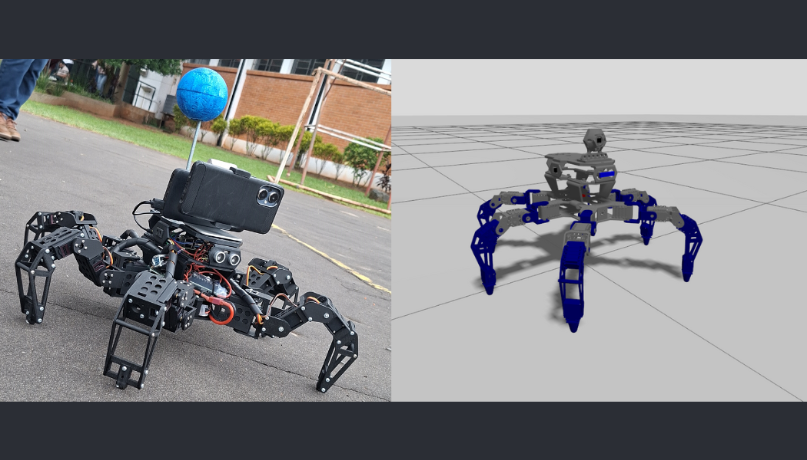

Complete development of a 6-legged autonomous robot (hexapod) — from mechanical 3D design and embedded firmware to a full ROS2 software stack running in both Gazebo simulation and on the physical robot. The same high-level behaviors — autonomous navigation, vision-based following, swarm coordination, hand-gesture interaction — run identically on the simulator and real hardware. The only difference is the actuation layer.
| Component | Details |
|---|---|
| 🖥️ PC | ASUS TUF Gaming F15 — NVIDIA RTX 3060 · Ubuntu 24.04 LTS |
| 🍓 Raspberry Pi | Raspberry Pi 4 (4 GB RAM) · Ubuntu 24.04 LTS |
| 🔌 Microcontroller | Arduino Mega — 18 servo motors (3 DOF × 6 legs) |
| 📱 Smartphone | Google Pixel 7 — camera + IMU via SensorServer |
| 🦿 Mechanics | Custom 3D-printed chassis · SolidWorks design |
| 📡 Sensors | HC-SR04 ultrasonic · IMU · GPS (via smartphone) · IR proximity |
YOLO-based visual target tracking and pursuit in real time.
Autonomous travel to GPS waypoints with heading + obstacle avoidance.
Leader-following with simplified collective swarm rules.
Hand-gesture recognition (ROCK / VICTORY / AL_PELO) → motion commands via MediaPipe.
IMU-driven postural correction — real-time roll / pitch stabilization.
Direct keyboard control for debugging and calibration.
The core philosophy is dual-execution: one shared intelligence layer drives two physical
realities. High-level behaviors (vision, navigation, social logic) publish to a single
cmd_robot topic. A simulation bridge maps that to Gazebo joint trajectories; the real-robot
bridge sends commands over serial to the Arduino Mega which runs the inverse-kinematics loop at 50 Hz.
The Arduino controls 18 servo motors (3 DOF per leg — Coxa · Femur · Tibia, lengths 51 mm / 65 mm / 121 mm) and generates IK-based foot placement for forward, backward, lateral, and rotational gaits. Battery voltage (12 V) is monitored continuously.
A Google Pixel 7 running the SensorServer Android app streams GPS, IMU, and camera data over WebSocket to the ROS2 network, acting as a low-cost multi-sensor hub.
Real Robot Demonstrations
Simulation Demonstrations